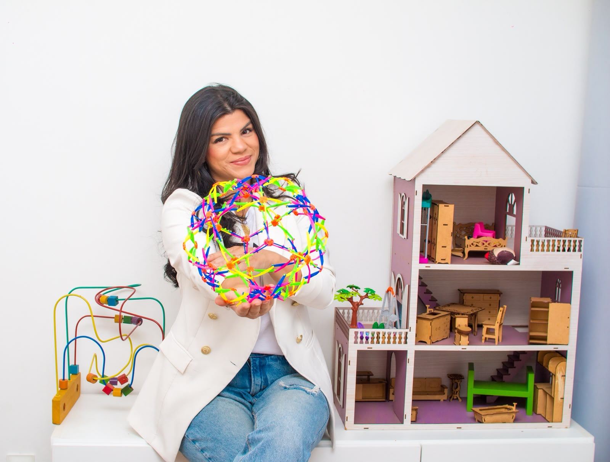
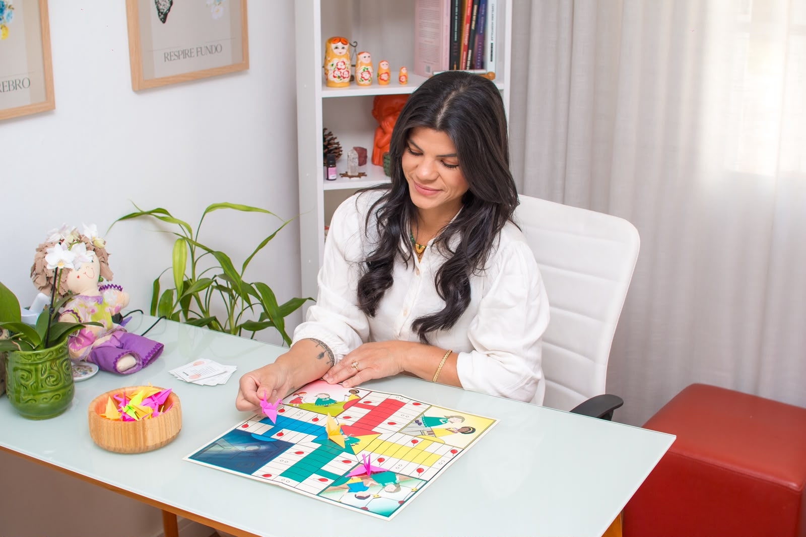

“Será que é só uma fase?”
Entender o comportamento da criança é o começo de uma resposta mais cuidadosa.
Seu filho é muito mais que um diagnóstico. Encontre uma escuta que acolhe a criança e ajuda a família a entender os desafios da rotina.
Menos julgamento. Mais compreensão.
Um cuidado possível para a vida como ela é.

Crises, dificuldade para manter o foco, desafios na escola ou o cansaço de tentar de tudo. Você não precisa encontrar respostas sozinho.
Fale sobre o que está acontecendoEntender o comportamento da criança é o começo de uma resposta mais cuidadosa.
Ter apoio para olhar a situação com mais clareza muda a forma de atravessar o dia a dia.
A criança vive em muitos contextos. Sua história merece ser vista por inteiro.
O TDAH pode fazer parte da história, mas não conta a história toda. A escuta clínica considera a criança, seus vínculos e os desafios reais da família.
Brincar, se expressar e construir confiança no próprio tempo.
Olhar para necessidades, emoções e contextos, sem reduzir a criança a um rótulo.
Uma conversa honesta sobre os desafios da rotina e os próximos passos possíveis.
Menos culpa, mais estratégia para pais.
TDAH na prática real, como Ariele compartilha no Instagram.
Sou psicóloga infantil e compartilho um jeito mais humano e prático de olhar para o TDAH na infância.
Acredito em uma infância vista com atenção, sem pressa de encaixar comportamentos em rótulos. Meu trabalho parte da escuta da criança e de uma conversa próxima com quem cuida dela.
Conte um pouco do que sua família está vivendo. Vamos conversar sobre como posso ajudar.
Falar com a Ariele no WhatsApp